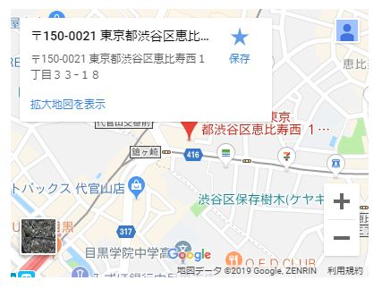
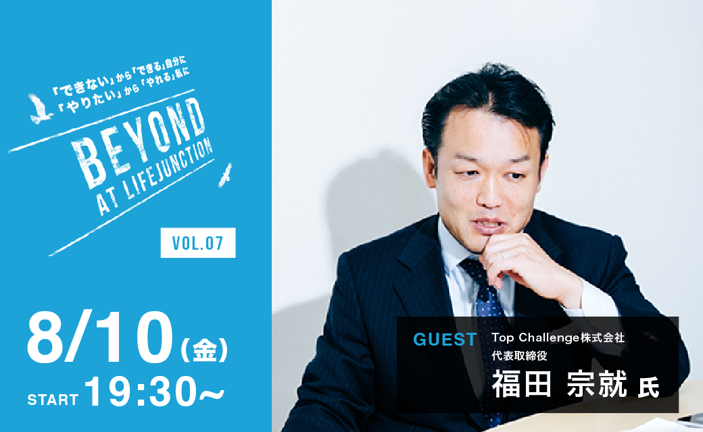
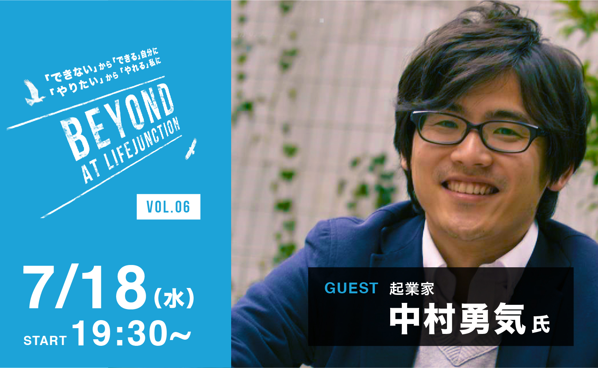
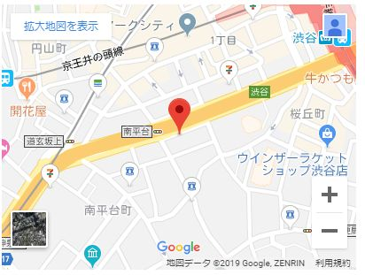
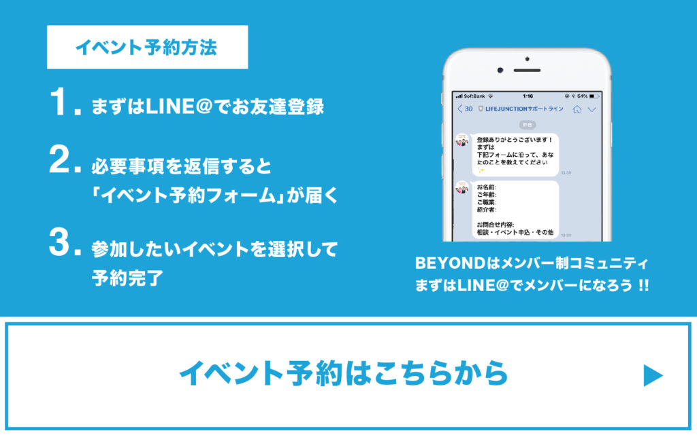
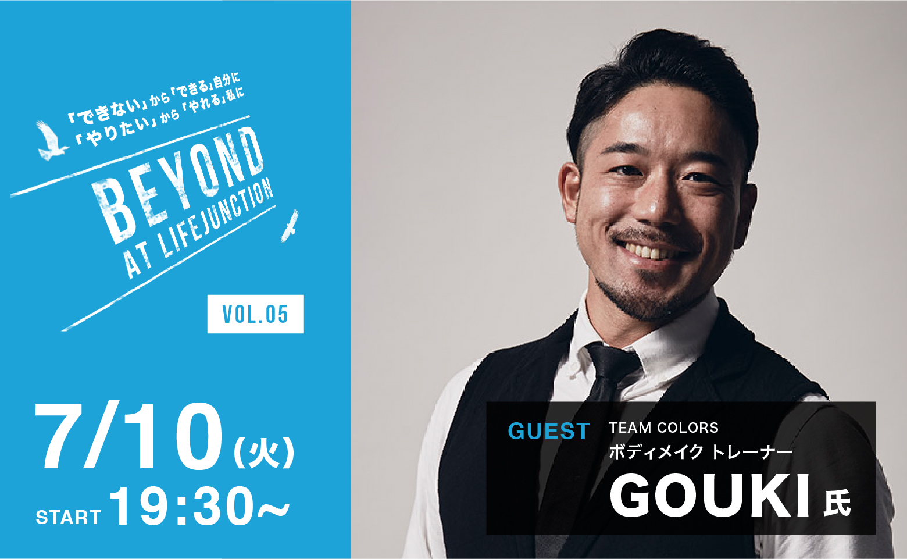
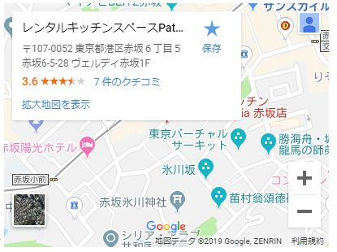
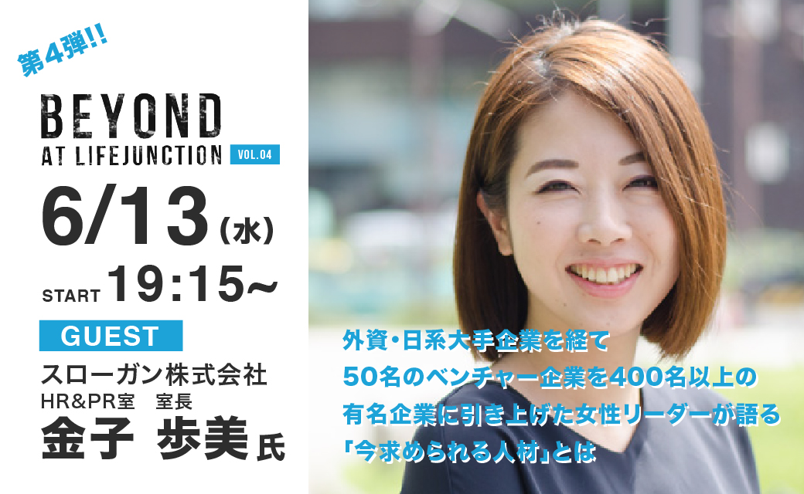
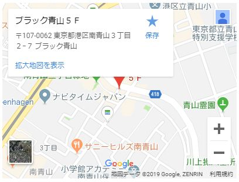
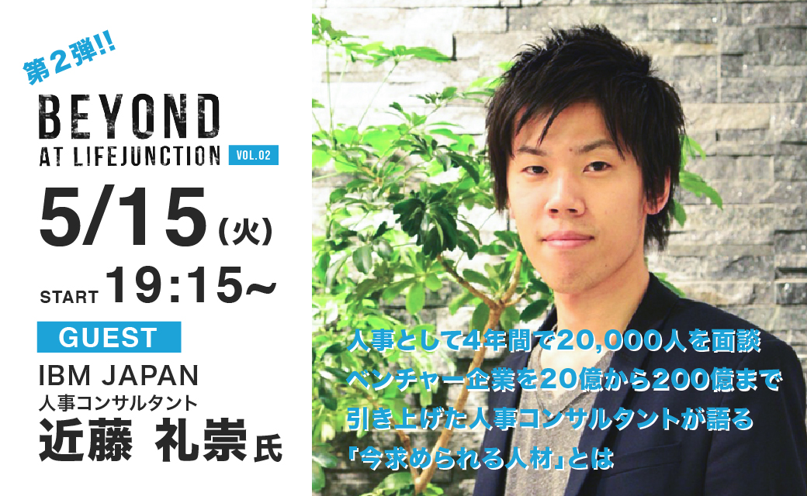

第8弾！ 【100名限定】 ”BEYOND” AT LIFEJUNCTION VOL.08
毎回ゲストスピーカーをお呼びして「企業、経営者が語るぶっちゃけ本音トーク」をメインテーマに講演・交流会を開催します。
第8のゲストは、大川達弘様。
500円海鮮丼で有名な「丼丸」（現株式会社ニホンバシ）の代表取締役でもあり、株式会社WAOCON代表取締役としてフランチャイルズ展開、SNSマーケティングなど、まさに「世の中に流行らせる」ことを事業として取り組まれている方です。
「流行らせるってどういうこと？」
「マーケティングって？」
ということから、気さくなお人柄の大川様にたくさんお話いただこうと思います。
このような貴重な機会、みなさんのキャリアや今後の人生において役立つことは間違いなしです！
講演後には懇親会を開催します。
ゲストの大川様を始め、LIFE JUNCTIONスタッフに直接キャリアに関する相談も可能です！
また、今回なんと特別に”TEAM COLERS”が懇親会中に【第一印象辛口CHECKコーナー】を開いてくれることになりました！
普段友達や同僚が言ってくれない、あなたの印象や見た目についてプロの目からアドバイスをもらえるチャンス。
ぜひご参加ください。
◇日時◇
11月/29(木)19:30〜
◇会場◇
代官山駅5分 GOBLIN代官山
東京都渋谷区恵比寿西1-33-18 コート代官山B1F



第7弾！ 【70名限定】 ”BEYOND” AT LIFEJUNCTION VOL.07
毎回ゲストスピーカーをお呼びして「企業、経営者が語るぶっちゃけ本音トーク」をメインテーマに講演・交流会を開催します。第7回目のゲストは、経営アドバイザーや顧問として約40社を抱える、Top Challenge株式会社代表の福田胸就様。ありとあらゆる業界に太い繋がりを持ち、人脈の数は約10,000社を超え、直近5年間に約2,500件のビジネスマッチングを行う、人脈構築や営業テクニックのまさにプロフェッショナルです。さらに日本トップランカーのベンチプレス選手としての顔も持つスーパーマンのような方です。そんな福田様より、”ゼロから作る人脈構築のテクニック””勝手に仕事に繋がる、営業しない営業テクニック””多忙な中で身につけた時間の効率的な使い方”などを切り口に、今回は誰もが教えてほしい人脈作りの方法や仕事に繋げる方法、考え方、意識の仕方を披露していただきます。経営者が殺到するレベルの講演を、LIFE JUNCTIONのためならと特別にゲストとしてご登壇いただけることになりました。このような貴重な機会、みなさんのキャリアや今後の人生において役立つことは間違いなしです！講演後には懇親会を開催します。ゲストの大川様を始め、LIFE JUNCTIONスタッフに直接キャリアに関する相談も可能です！また、今回なんと特別に”TEAM COLERS”が懇親会中に【第一印象辛口CHECKコーナー】を開いてくれることになりました！普段友達や同僚が言ってくれない、あなたの印象や見た目についてプロの目からアドバイスをもらえるチャンス。ぜひご参加ください。◇日時◇ 8/10(金)19:15 OPEN 19:30 START 22:30 CLOSE ◇会場◇ SLACK BOX SHIBUYA 150-0031 東京都渋谷区桜丘町31-14岡三桜丘ビル1階 ◇料金◇ メンバー価格：3,500円 ビジター価格：4,000円 ※セミナー参加費＋懇親会（軽食含む） ◇締切◇ ※LIFE JUNCTIONメンバーの方は優先申込でお席の確保をします。 優先申込：7/31（メンバーまたはメンバーのご紹介様限定） 一般申込：8/8 ▼申込はこちらから

第6弾！ 【70名限定】 ”BEYOND” AT LIFEJUNCTION VOL.06
毎回ゲストスピーカーをお呼びして「企業、経営者が語るぶっちゃけ本音トーク」をメインテーマに講演・交流会を開催します。第5回目のゲストは、Jobwebにて執行役員、ランサーズにて部長リーダー職を歴任され、現在は人材開発分野でパーソナルコーチングを企業や個人向けに展開しており、近々法人立ち上げ予定の中村勇気様。そんな中村様より、”個の時代になった今、求められる人材とは？””企業寿命よりも個人寿命が長い時代において身につけるべき実力とは？””スキルや専門性だけでなく、事故発見を通して自らの人間力を発揮していくには？”などを切り口に、企業側も個人側からも熟知されている中村様から、組織や企業への完全依存ではなく、個人として生き抜くための考え方をご披露していただきます。どのような人材が求められているのか。業界問わず共通する人材像とは、求職者側が勘違いしている人材あるある、ということをテーマに、かなり本音を”ぶっちゃけて”いただくこの機会、みなさんのキャリアや今後の人生において役立つことは間違いなしです！！また、講演後には懇親会を開催します。ゲストの中村様を始め、LIFE JUNCTIONスタッフに直接キャリアに関する相談も可能です！懇親会でしか聞けない話もあるかも。。。？ぜひ参加者同士での交流も深めてください。 詳細情報
◇日時◇ 7/18(水)19:15 OPEN 19:30 START 22:30 CLOSE ◇会場◇ SLACK BOX SHIBUYA 150-0031 東京都渋谷区桜丘町31-14岡三桜丘ビル1階
◇料金◇ メンバー価格：3,500円 ビジター価格：4,000円 ※セミナー参加費＋懇親会（軽食含む） ◇締切◇ ※LIFE JUNCTIONメンバーの方は優先申込でお席の確保をします。 優先申込：7/1（メンバーまたはメンバーのご紹介様限定） 一般申込：7/14 ▼申込はこちらから


第5弾！ 【30名限定】 ”BEYOND” AT LIFEJUNCTION VOL.05
beyondでは毎回ゲストスピーカーをお呼びして「企業、経営者が語るぶっちゃけ本音トーク」をメインテーマに講演・交流会を開催します。が、今回は！！！ファーストステップとして運営元LIFE JUNCTIONからお届け！「ビジネスでもプライベートでも役立つ、相手への印象付けから距離感の詰め方まで」、TEAM COLERSからボディメイクトレーナーGOUKIをゲストとして迎え、トークセッションを行います。 ・相手に確実に印象を残すには？ ・自分が今どんな印象を与えているのか？ 初対面から「また会いたい」と思わせるには？などなどビジネスシーンはもちろんプライベートでも活用できる内容となっております！ ※LIFE JUNCTIONとは：http://www.lifejunction.jp/ TEAM COLERSとは：https://www.teamcolors.jp また、講演後には懇親会を開催します。今回は特別にGOUKIによる”ボディバランス診断”を15名限定で無料実施いたします。また、LIFE JUNCTIONスタッフへのキャリア相談も可能です！ぜひ参加者同士での交流を深めてください。
詳細情報
◇日時◇ 7/10(火)19:15 OPEN 19:30 START 22:30 CLOSE ◇会場◇ Patia(パティア)赤坂店 〒107-0052 東京都港区赤坂6-5-28 ヴェルディ赤坂 1F
◇料金◇ メンバー価格：3,500円 ビジター価格：4,000円 ※セミナー参加費＋懇親会（軽食含む） ◇締切◇ ※LIFE JUNCTIONメンバーの方は優先申込でお席の確保をします。 優先申込：6/30（メンバーまたはメンバーのご紹介様限定） 一般申込：7/5 ▼申込はこちらから

第4弾！ 【100名限定】 ”BEYOND” AT LIFEJUNCTION VOL.04
毎回ゲストスピーカーをお呼びして「企業、経営者が語るぶっちゃけ本音トーク」をメインテーマに講演・交流会を開催します。第4回目のゲストは、スローガン株式会社にて人事・広報のリーダーポジションとしてご活躍される金子歩美様。2008年に慶応SFC卒業後、Ferrari,Maseratiなどを商材とする外資系企業にて人事・マーケティングなどを経験。その後2011年にレバレジーズ株式会社に転職、社員数50名規模から400名規模になるまでの間、約4年間新卒採用の責任者を担い、無名のベンチャーからの採用ブランディング、採用戦略の立案・実務までを経験。2015年7月よりスローガンに入社、現在に至る。今回、女性リーダーによる、”ぶっちゃけ”話を聞ける貴重な機会です！それに限らず、外資・日系大手企業からベンチャーのキャリアを有し、特に大手外資系企業を飛び出して無名のベンチャーを有名企業までに引き上げた採用責任者としての経験談はご自身のキャリアや今後のビジョン形成に役立つ事は間違い無いです！！どのような人材が求められているのか、業界問わず共通する人材像とは、求職者側が勘違いしている人材あるある、ということをテーマに、かなり本音を”ぶっちゃけて”いただくこの機会、みなさんのキャリアや今後の人生において役立つことは間違いなしです！！また、講演後には懇親会を開催します。ゲストの金子様を始め、LIFE JUNCTIONスタッフに直接キャリアに関する相談も可能です！懇親会でしか聞けない話もあるかも。。。？ぜひ参加者同士での交流も深めてください。
詳細情報
◇日時◇ 6/13(水)19:15 OPEN 19:30 START 22:30 CLOSE ◇会場◇ SLACK BOX SHIBUYA 150-0031 東京都渋谷区桜丘町31-14岡三桜丘ビル1階
◇料金◇ メンバー価格：3,500円 ビジター価格：4,000円 ※会費は懇親会も含む 将来を一歩明確にするため、是非役立てて下さい。 ◇締切◇ ※LIFE JUNCTIONメンバーの方は優先申込でお席の確保をします。 優先申込：5/23（メンバーまたはメンバーのご紹介様限定） 一般申込：6/7 ▼申込はこちらから

第3弾！ 【30名限定】 ”BEYOND” AT LIFEJUNCTION VOL.03
beyondでは毎回ゲストスピーカーをお呼びして「企業、経営者が語るぶっちゃけ本音トーク」をメインテーマに講演・交流会を開催します。が、今回は！！！ファーストステップとして運営元LIFE JUNCTIONからお届け！「ビジネスでもプライベートでも役立つ、相手への印象付けから距離感の詰め方まで」、TEAM COLERSからボディメイクトレーナーGOUKIをゲストとして迎え、トークセッションを行います。 ・相手に確実に印象を残すには？ ・自分が今どんな印象を与えているのか？ 初対面から「また会いたい」と思わせるには？などなどビジネスシーンはもちろんプライベートでも活用できる内容となっております！ ※LIFE JUNCTIONとは：http://www.lifejunction.jp/ TEAM COLERSとは：https://www.teamcolors.jp また、講演後には懇親会を開催します。今回は特別にGOUKIによる”ボディバランス診断”を15名限定で無料実施いたします。また、LIFE JUNCTIONスタッフへのキャリア相談も可能です！ぜひ参加者同士での交流を深めてください。
詳細情報
◇日時◇ 6/9(土)19:15 OPEN 19:30 START 22:30 CLOSE ◇会場◇ 〒107-0062 東京都港区南青山3丁目2-7 ブラック青山 5F LOUNGE
会費は懇親会も含めてなんと メンバー価格：3,500円！ ビジター価格：4,000円！ 将来を一歩明確にするため、是非役立てて下さい。 ◇締切◇ 優先申込：5/25（ご紹介様限定） 一般申込：6/5 ▼申込はこちらから
